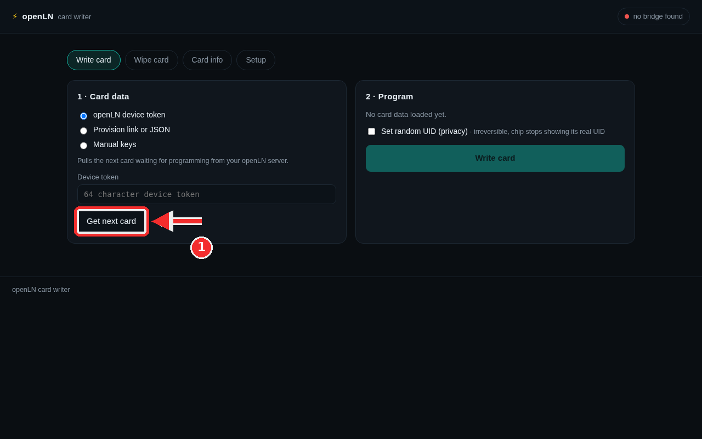
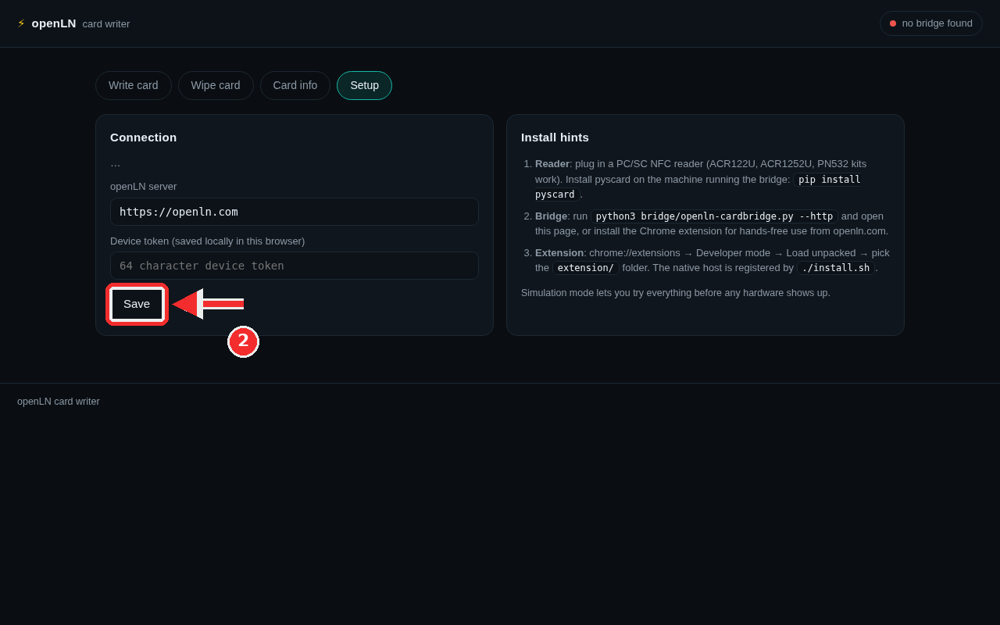
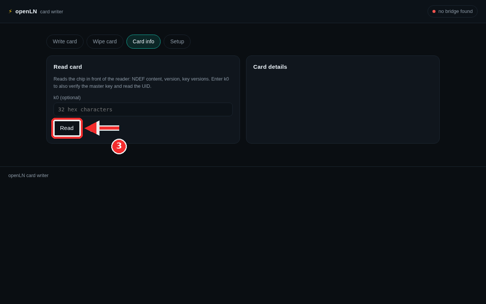

How to write cards from a computer (desktop Card Writer)
The Card Writer also comes as a page on your computer. It does the same job as the phone app: it puts a freshly issued card's keys onto a blank NTAG424 chip. The difference is the hardware. A browser on its own cannot talk to a card reader, so the desktop route needs two things: a PC/SC USB NFC reader, and a small local helper called the bridge that carries the card conversation between the page and the reader. Once those are in place, the writer pulls the next card waiting on your openLN server and programs it. When that write lands, the card leaves the READY TO WRITE state and can take payments.
- You have issued the card and it is waiting in the list with a READY TO WRITE badge. If you have not done that yet, start with How to issue a new Bolt card.
- You have a blank NTAG424 card ready to write. The card shop sells them, through the Get a physical card link on the Cards page.
- You have a PC/SC USB NFC reader (an ACR122U, an ACR1252U, or a PN532 kit) and the bridge running on the same machine. Step 2 walks through both.
- You have your openLN device token at hand, the 64 character code from the cards page. If you would rather not use the token, the writer also accepts a card's setup link or manual keys (step 1).
- Nothing is charged during a write, and no funds move.
Pull a card and program it from the Write card tab
Open the Card Writer page. Your openLN host serves it at /card-writer. The screenshot shows it freshly opened. In the top bar on the right sits the bridge status pill: until the bridge or the Chrome extension is set up, it shows a red dot and "no bridge found", and that is expected on a new machine. Step 2 fixes it. The four tabs under the header are Write card, Wipe card, Card info and Setup. They mirror the jobs the phone app does, and the page opens on Write card.
The write screen is two panels. On the left, 1 · Card data asks where the card's data should come from, with three options: openLN device token (the default), Provision link or JSON, and Manual keys. Stay on openLN device token and paste your token into the Device token field. It is the 64 character token you copied from the cards page, and it tells your openLN server that this computer is allowed to pull from the card queue. The line under the options says exactly what the button does: "Pulls the next card waiting for programming from your openLN server."
Press Get next card (red mark). The writer asks your openLN server for the oldest card waiting to be written and loads its data. The token is saved locally in this browser the moment you use it, so you paste it once and every later visit remembers it. You can also save it up front on the Setup tab (step 2). The other two sources do the same job without a token: Provision link or JSON takes the setup link from a card's QR, or a saved JSON payload, and Manual keys takes an lnurlw base plus k0 to k4, for lab cards.
On the right, 2 · Program is the scoreboard. Before any data is loaded, it reads "No card data loaded yet." and the Write card button cannot be pressed. After a successful Get next card, it fills in with the loaded card's details: the card name and id, the lnurlw, a short prefix of each key (k0 to k4), where the NDEF content comes from, and the Random UID line.
One choice belongs here, before writing. Set random UID (privacy) makes the chip stop showing its real UID, and the note next to it says the rest: it is irreversible for that chip. Leave it off unless you want it. Card data pulled from the server can also ask for it, and the box arrives ticked when it does.
Then the write itself: hold the blank card flat on the reader and press Write card. Keep the card in place. Lines stream into the log under the button as the writer moves through the chip: the NDEF content first, then the SDM settings, then the keys, with k0 last, because changing it ends the session. A good run ends with "card written and keys verified against the chip", alongside the card's UID and three follow-up buttons. Verify (tap check) reads the card the way a phone would. Mark written in openLN tells the server the write is done, so the card stops showing as ready to write. Write another clears the panel for the next blank card.

Save the connection and set up the bridge
Step 1 assumed the bridge already answers. This step makes that true. Open Setup. The Connection block stores two things and nothing else: the openLN server this writer talks to, and the Device token (saved locally in this browser) it talks with. The status list at the top of the block reports what the page currently sees: channel, transport, reader, readers found. Fill the server field if your account is not on openln.com, paste the same 64 character token into the token field, then press Save (red mark). Both values stay in this browser only. Close the tab, come back, and the connection is where you left it.
The Install hints panel beside it explains the hardware. First, the reader: plug a PC/SC NFC reader into the machine. The common choices are the ACR122U and the ACR1252U, and PN532 kits work too. Install the Python package that talks to readers of this kind, on the machine running the bridge: pip install pyscard. On Linux, install the PC/SC daemon as well: sudo apt install pcscd.
Second, the bridge: run python3 bridge/openln-cardbridge.py --http and open the page. The bridge listens on your own machine only, so the page finds it by itself, and the pill in the top bar stops saying "no bridge found" and shows the reader's name, or "simulator" in simulation mode. The other way is the included Chrome extension, for hands-free use from openln.com: it talks to the reader through a native host instead of a local server.
To set up the extension, open chrome://extensions, switch on Developer mode, press Load unpacked, and pick the extension/ folder that ships with the writer tools. The native host is registered by running ./install.sh once.
No reader at the desk yet? The bridge can run in simulation mode with --sim. The page then adds a Simulator box with a Reset simulated card button, and writes, key changes and tap checks all run against a built-in chip simulation. As the hint at the bottom of the panel puts it: "Simulation mode lets you try everything before any hardware shows up."

Read any card on the Card info tab
The third tab is a checker. Nothing is written and nothing changes; the page just looks at whatever chip is on the reader. Open Card info and put a card flat on the reader. The line under the heading describes the read: "Reads the chip in front of the reader: NDEF content, version, key versions. Enter k0 to also verify the master key and read the UID." The k0 field is optional, and for a first check you can leave it empty.
With the card in place, press Read (red mark). The results land in the Card details panel beside it. Without k0 you get the safe half: the NDEF content the chip carries, the chip version, and the key versions. If you paste the card's master key into the k0 field, 32 hex characters, the same read also verifies that key and reads the card's UID.
Use this tab before a write, to see whether the card on the reader is a factory blank or already carries something, and after a write, to confirm that the expected content landed. It is also the first stop when a write is refused: the log names the reason with a short code, and a read settles it. 91AE usually means the chip no longer answers to the factory keys, so wipe the card first; 6982 means its file is already locked; and 91AD means an earlier run stopped halfway, so that card wants a wipe and a fresh start.

- No computer needed, if you prefer. The openLN Card Writer app on an Android phone writes cards, and a linked RIC writes cards from the counter, both with no computer involved. The desktop route is for desks that would rather keep a reader plugged into the computer. Those two lanes live in How to write a card (openLN app or RIC).
- The queue is shared. Unwritten cards wait on your openLN server, and both the RIC and this desktop writer pull from the same queue, oldest card first. Either one can finish whichever card has waited longest.
- Simulator first, hardware second. Every screen in this guide can be walked through with no reader at all, in simulation mode. Do a rehearsal run there, then repeat it with a real card on the reader.
- Your token stays close. The device token is saved in this browser only, and the writer sends it only toward your own openLN server. The bridge binds to 127.0.0.1, meaning the same machine only; it holds no keys and stores nothing, it just passes card conversations back and forth.
- Nothing is lost if you stop halfway. An unwritten card keeps its READY TO WRITE badge and simply cannot pay yet. Write it when a blank card and the reader are at hand.